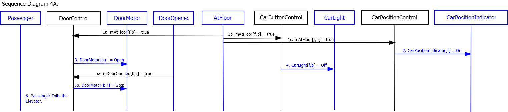
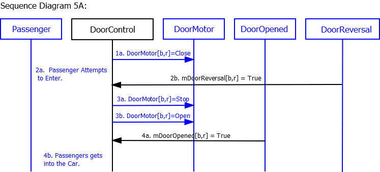
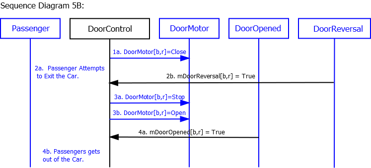

Use Case 4: Passenger
Exits Elevator
Scenario 4A: Passenger is in the elevator as it arrives at
the passenger's desired hallway.
Author name: Sri Harsha Koppaka (skoppaka)
Pre-Conditions:
- Passenger is inside the car, traveling to desired floor f
and hallway b.
- Car is traveling in direction d
- All doors are closed.
Scenario:
- Car arrives at the passenger's desired hallway.
- CarPositionIndicator displays the current floor of elevator.
- DoorMotors[b,r] are commanded to open.
- CarLight[f,b] for the passenger's hallway goes off.
- Doors[b,r] are completely open.
- Passenger exits the elevator.
Post-Conditions:
- Elevator is at the passenger's floor.
- CarLight for the passenger's floor goes off.
- Doors[b,r] are open.
Sequence Diagram:

Use Case 5: Passenger
Triggers Door Reversal
Scenario 5A:
Passenger attempts to enter the car as the doors begin to close.
Author name: Sri Harsha Koppaka (skoppaka)
Pre-Conditions:
- Passenger is outside the car.
- Car is stopped at passenger's floor f and hallway b.
- At least one door[b,r] is open.
Scenario:
- Door[b,r] starts closing.
- Passenger attempts to enter into the elevator triggering
DoorReversal[b,r].
- DoorMotor[b,r] commanded to Stop and then Open.
- Passenger gets into the car as the doors open again
completely.
Post-Conditions:
- Passenger gets into the elevator.
- Doors[b,r] are completely open.
Sequence Diagram:

Scenario 5B:
Passenger attempts to exit the car as the doors begin to close.
Author name: Sri Harsha Koppaka (skoppaka)
Pre-Conditions:
- Passenger is inside the car.
- Car is stopped at passenger's floor f and hallway b.
- At least one door[b,r] is open.
Scenario:
- Door[b,r] starts closing.
- Passenger attempts to exit the elevator triggering
DoorReversal[b,r].
- DoorMotor[b,r] commanded to Stop and then Open.
- Passenger gets out of the car as the doors open again
completely.
Post-Conditions:
- Passenger gets out of the elevator into the hallway.
- Doors[b,r] are completely open.
Sequence Diagram:

{kind=link}
{kind=link}
{kind=link}